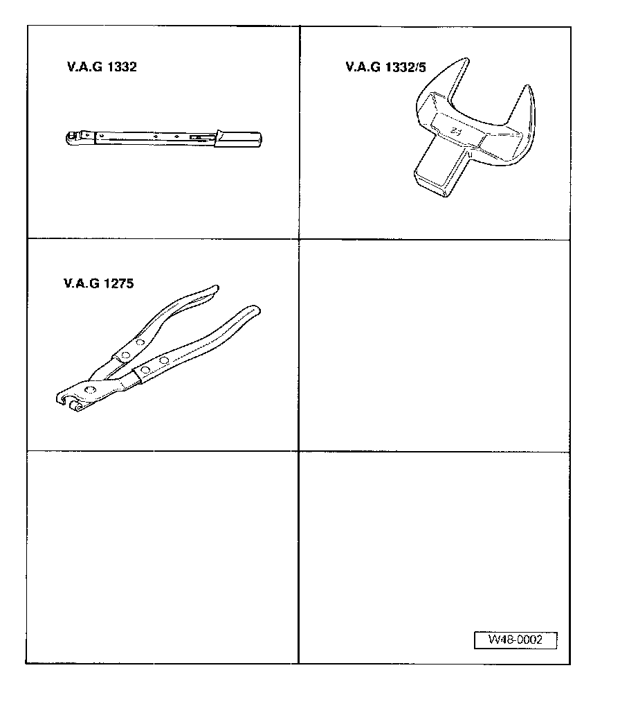

Operation CHARM
: Car repair manuals for everyone.
Home
>>
Volkswagen
>>
1997
>>
GTI (1H1) V6-2.8L (AAA)
>>
Repair and Diagnosis
>>
Steering and Suspension
>>
Steering
>>
Tie Rod
>>
Tools and Equipment
Tie Rod: Tools and Equipment
Special tools and equipment

VAG 1332 Torque wrench
VAG 1332/5 Open jaw insert, 34 mm (1.34 inch) AF
VAG 1275 Pliers